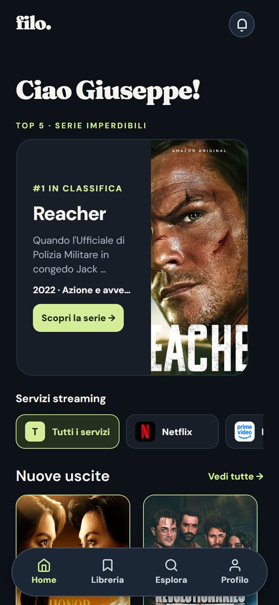
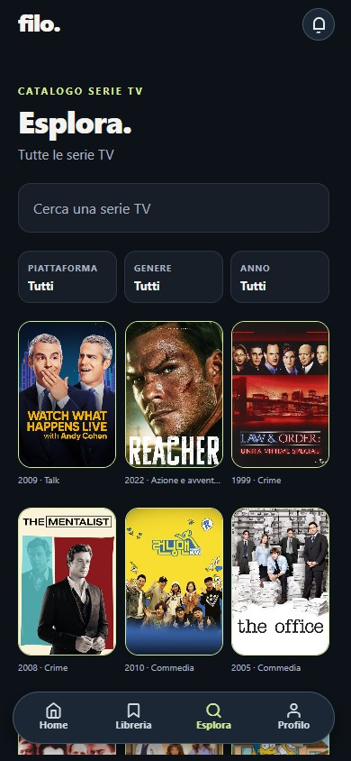
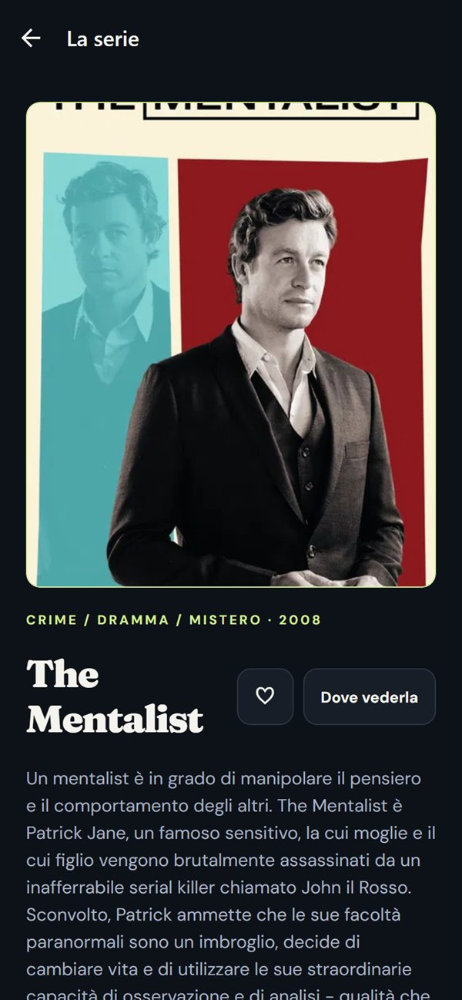
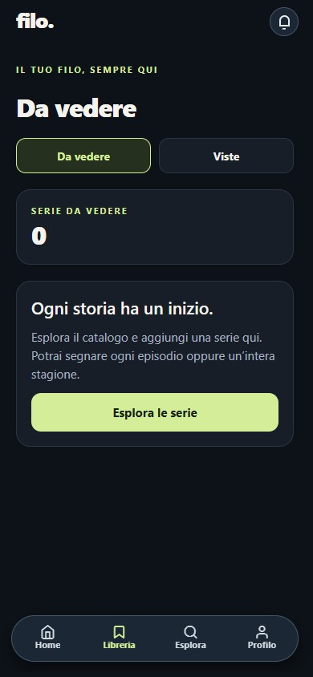

Consigli su misura
Dopo la prima visione compare “Serie che potrebbero piacerti”. Tutta la cronologia contribuisce al tuo profilo di generi e temi, con più peso alle visioni recenti. Le serie già iniziate non vengono mai riproposte.
Il tuo diario di serie
Le tue serie, gli episodi visti e il piacere di sapere sempre dove sei arrivato.
Web app installabile su telefono e computer

Dentro l'app



Cosa fa Filo
Dopo la prima visione compare “Serie che potrebbero piacerti”. Tutta la cronologia contribuisce al tuo profilo di generi e temi, con più peso alle visioni recenti. Le serie già iniziate non vengono mai riproposte.
Per ogni serie vedi su quali servizi è disponibile in Italia, con i collegamenti diretti. Puoi filtrare la Home per servizio di streaming.
La campanella si accende per i nuovi episodi delle serie che stai seguendo. Mai avvisi su uscite vecchie.
Filo tiene il conto di episodi e stagioni, distingue le visioni dalle revisioni e sa quando sei in pari con una serie ancora in corso. Gli episodi non ancora usciti non si possono segnare.
Il filo delle tue storie